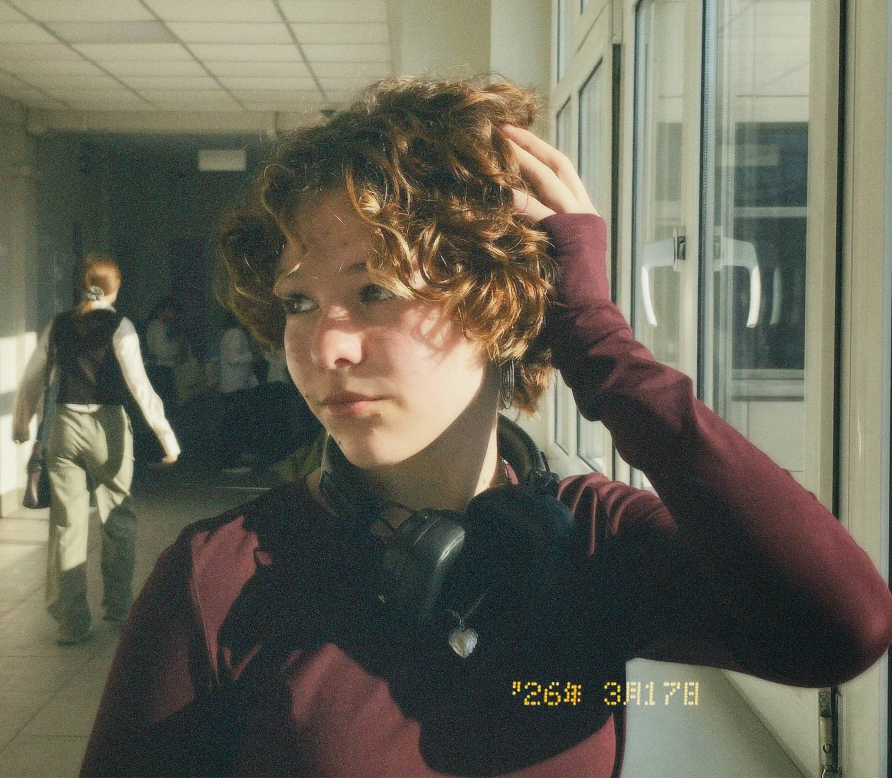
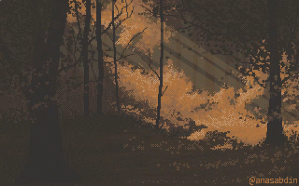

1. Закончила художественную школу
2. Прошла курсы Python
3. Прошла курсы HTML и CSS

Меня зовут Ева, я из Великого Новгорода, учусь в 9 классе и мне 15 лет. Я начинающий специаист по дизайну; интересовалась этим еще с детства. Мне очень нравится создавать что-то креативное, кастомизировать и стилизовать под себя уже имеющиеся вещи и разрабатывать дизайны сайтов.
Хорошо работаю с теорией цвета и композиционными построениями. Умею работать с многимим материалами. Знаю основы дизайна. Разбираюсь в HTML и CSS. Умею работать с кадром, правильно выбирать цвета, контраст, масштаб и ритм, которые сразу привлекают взгляд.
Усидчивость, терпеливость, насмотренность, оргнизованность, сосредоточенность, коммуникабельность, внимание к деталям, креативность, ответственность, чувство стиля и меры, хорошая обучаемость, гибкое мышление, отзывчивость, открытость.
Заканчиваю 9 класс в гимназии "Исток", а после, продолжу обучение в Политехническом коледже при университете НовГУ
Хочу стать веб-дизайнером, ландшафтным дизайнером или дизайнером интерьера.